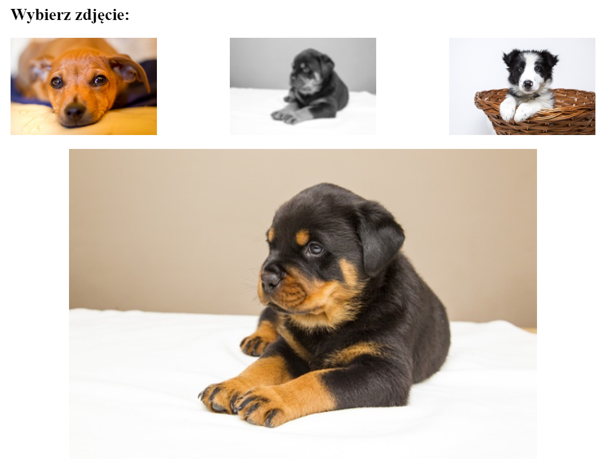

Zadanie:
Wymagania dotyczące skryptu:
- Wykonywany po stronie przeglądarki, wywoływany przez zdarzenia kliknięcia w miniaturę obrazu,
najechanie kursorem i opuszczenie przez kursor myszy miniatury obrazu
- Po najechaniu kursorem myszy na dowolną miniaturę podmieniane jest zdjęcie kolorowe na odpowiadające
mu zdjęcie z odcieniami szarości i filtrem, np plik pies1.jpg zamieniany jest na pies1-szary.jpg
- Po opuszczeniu miniatury przez kursor myszy jest wykonywana odwrotna transformacja – zdjęcie z
odcieniami szarości jest zamieniane na zdjęcie kolorowe, np. plik pies1-szary.jpg zamieniany jest na
pies1.jpg
- Po kliknięciu na obraz-miniaturę wykonywane są dwie akcje:
- Ta sama, co przy opuszczeniu kursora – podmiana obrazu z odcieniami szarości na kolorowy
- Kliknięty obraz jest wyświetlany w panelu prawym – dolnym. Np. jeżeli kliknięto na miniaturkę
pies3.jpg z panelu prawego górnego, to w panelu prawym dolnym jest ładowany obraz pies3.jpg
Wygląd przykładowego rozwiązania:
